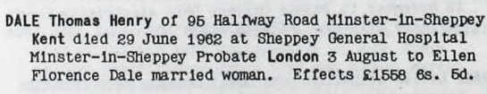
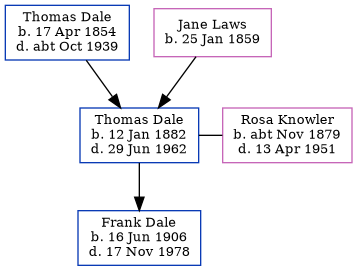

Thomas Henry Dale 1882 - 1962
[ Home ] | [ Calendar ] | [ Surnames Index ] | [ Family History ]An electrical fitter and the son of Thomas Dale (a dock yard laborer) and Jane LawsThomas Dale, the second cousin three-times-removed on the father's side of Nigel Horne, was born in Strood, Kent, England on Jan 12, 18821,2,3,4, was baptized in Frindsbury, Kent, England on Feb 12, 1882 and married his cousin on his father's side Rosa Knowler (a domestic housemaid with whom he had 1 child, Frank Aubrey George, ) at St Nicholas in Strood on Jul 1, 19057.
Throughout his life, Thomas lived in several places: at Montford Road in Strood on Apr 5, 18911; on Brompton Lane in Strood on Mar 31, 19012; at 61 Drayton Road, Portsmouth, Hampshire, England on Apr 2, 191110; at Halfway Road, Minster, Sheppey, Kent, England on Jun 19, 19219; and at 95 Halfway Road, Minster in Sheppey on Sep 29, 19393 and in 1962. Thomas In 1921 he was working at Admiralty Ship Building & Ship Repairing at H M Dockyard, Sheerness, Kent, England.
He died on Jun 29, 1962 at Sheppey General Hospital in Sheppey5,6 and was buried at Sheppey Cemetery, Sheppey on Jul 5, 19628.
Parents
- Thomas Henry was born on Apr 17, 1854
- Jane was born on Jan 25, 1859
Children
- Frank Aubrey George was born on Jun 16, 1906
Citations
- 1891 England, Wales & Scotland Census - Findmypast (was age 9 and the son of the head of the household)
- 1901 England, Wales & Scotland Census - Findmypast (was age 19 and the son of the head of the household)
- 1939 Register - Findmypast (was the head of the household)
- England & Wales births 1837-2006 - Findmypast
- England & Wales Government Probate Death Index 1858-2019 - Findmypast
- England & Wales deaths 1837-2007 - Findmypast
- England & Wales Marriages 1837-2005 - Findmypast
- National Burial Index For England & Wales - Findmypast
- 1921 Census Of England & Wales - Findmypast (was age 39 and the head of the household)
- 1911 Census for England & Wales - Findmypast (was age 29 and the head of the household)
Media
Thomas Dale - probate

National Burial Index for England & Wales - GBPR/D/NBI03322034
England & Wales births 1837-2006 - BMD/B/1882/1/AZ/000139/308
England & Wales marriages 1837-2005 - BMD/M/1905/3/AZ/000095/074
1911 Census for England & Wales - GBC/1911/RG14/05506/0585/1
England & Wales deaths 1837-2007 - BMD/D/1962/3/AZ/000212/007
Kent marriages and banns - PRS/MEDWAY/MAR/0068147/1
1939 Register - TNA/R39/1845/1845H/024/09
Kent Baptisms - PRS/MEDWAY/BAP/0203320
England & Wales Government Probate Death Index 1858-2019 - GBOR/GOVPROBATE/C/1962-1962/00056754
Britain, Campaign, Gallantry & Long Service Medals & Awards - GBM/BT351/112435
1921 Census Of England & Wales - GBC/1921/RG15/04411/0033/01
Family Tree
Generated by ged2site. Last updated on Nov 13, 2024